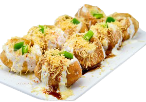

Walking on the bustling streets of Ajmer, you will find a quaint pyau (drinking place) and a chaat
centre right beside it. Famous as Gol Pyau Chaat Center, the actual name of the street side shop is
Shankar Chaat Centre. It is situated in Naya Bazaar, just a kilometre away from the world-famous Hazrat
Khwaja Ghareeb Nawaz Dargah of Ajmer.
This age-old chaat centre is a favourite breakfast joint of the locals and lies in the list of every
tourist visiting Ajmer. People of Ajmer usually start their mornings with kadhi-kachori. Kachori is a
deep-fried flattened bread stuffed with lentils and spices that are served with a combination of
tamarind chutney and kadhi made of curd and gram flour. This dish is known for its rich and spicy
flavour and is pocket friendly. Apart from kadhi-kachori, one can also savour Samosa, Aalu Tikki chaat,
and Lassi at Gol Pyau.